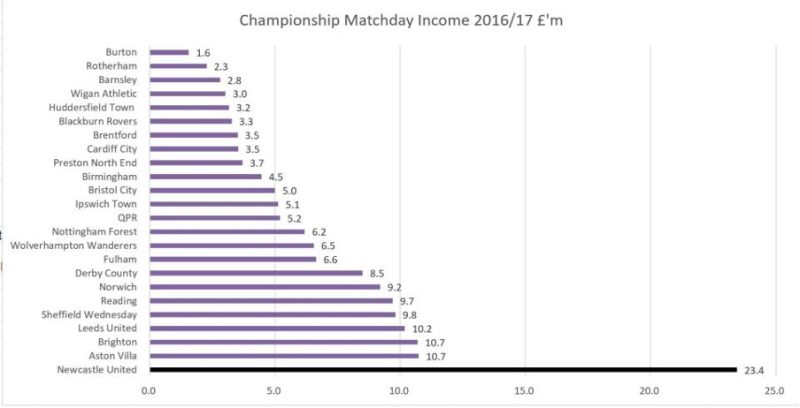

Newcastle United wasn't a risky investment in 2021. It was an undervalued one.

Newcastle is one of the most valuable teams in the World, and it is not only because of money.
Founded in 1892, the club has always had one thing investors look for first: Predictable demand.
Playing in the Championship after relegation, Newcastle demonstrated remarkable resilience:
That's Premier League-level revenue… in the second division.
After the PIF acquisition (£305m for 80%), the numbers show incredible stability:
Promotion, relegation, ownership change — attendance barely moved. The fanbase in North East England was already elite. The asset was stable.
The club's financial health was strong even before new investment:
This wasn't a distressed brand. It was an under-optimized one.
With investment:
Now:
Strong fan base + strong investment = success.
Investors don't buy trophies. They buy predictable demand with growth potential. Newcastle already had the first.